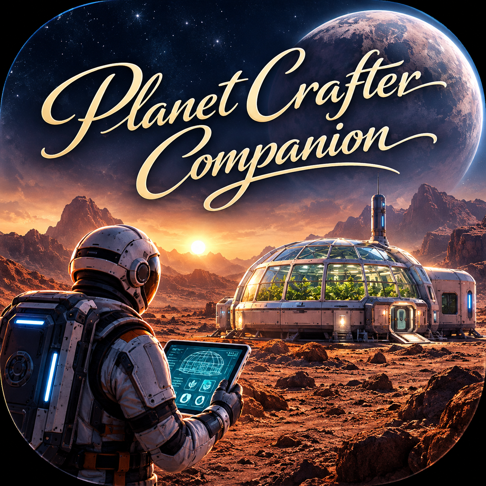

Products

Planet Crafter Companion
Your ultimate companion app for Planet Crafter. Track resources, plan builds, optimize terraforming, and access tools designed to enhance your gameplay experience.
Learn MoreAbout RizeAbove DataWorks
RizeAbove DataWorks is a small independent studio focused on building practical, high‑quality tools for gamers, creators, and problem‑solvers.
Founded with the belief that better tools lead to higher horizons, DataWorks aims to deliver software that is clean, reliable, and genuinely useful.
Planet Crafter Companion is our flagship project — a passion‑driven tool built to support the Planet Crafter community with planning, tracking, and automation features that make gameplay smoother and more enjoyable.
As we grow, our mission remains simple: create tools that help people do more, understand more, and enjoy more.
Contact
Discord: Join the Community